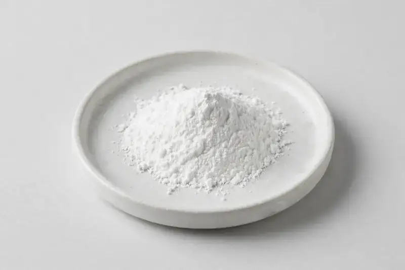

gamma-Aminobutyric acid (GABA) — a fermentation-derived amino acid for calm and sleep-oriented supplement formulations.

Overview
GABA (CAS 56-12-2) is a fermentation-derived amino acid commonly formulated into calm, relaxation and sleep-positioned supplements, often alongside L-theanine, magnesium or botanical actives. Buyers typically request 98%+ purity with a clean, low-colour powder profile for capsules, stick packs and gummies. Operating as a Xi'an-based trading company sourcing through vetted partner producers, we work from your target spec and confirm feasibility honestly before quotation.
Specifications below reflect commonly requested options in the market — not a stock list. Share your target spec and we'll confirm exactly what we can supply, honestly.
| Specification | Details |
|---|---|
| Botanical identity | gamma-Aminobutyric acid (GABA), fermentation derived, white crystalline powder |
| Marker compound | GABA — commonly requested: 98%+ (HPLC or titration) |
| Appearance | White to off-white fine powder |
| Mesh size | Typically 80–100 mesh (confirm per inquiry) |
| Testing | COA/TDS arranged on request; scope agreed per your spec |
Applications
Documentation
We don't claim in-house labs or certifications we don't hold. COA and TDS documents can be arranged on request, and testing scope is agreed against your specification before supply.
FAQ
Related products
Silybum marianum
Key marker: Silymarin
View specs →Ginkgo biloba
Key marker: Flavone Glycosides
View specs →Panax ginseng
Key marker: Ginsenosides
View specs →Creatine monohydrate
Key marker: Creatine monohydrate
View specs →L-Carnitine
Key marker: L-Carnitine
View specs →Send your target spec and volumes — we'll respond with a tailored quotation.
Request a Quote